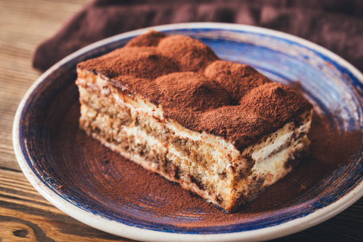

Tiramisu Recipe(s)

Ingredients
- heavy whipping cream
- mascarpone cheese
- sugar
- vanilla extract
- cold espresso
- coffee flavored liqueur
- lady fingers
- cocoa powder
Steps
- mix whipping cream, sugar, vanilla in a mixing bowl until stiff peaks
- add mascarpone cheese and fold in until combined; set aside
- add coffee and liqueur in bowl, and dip lady fingers in it
- lay down the needed lady fingers in a single layer on a pan
- smooth half of mascarpone mixture on top, then add another layer of dipped lady fingers. and so on ...
- dust cocoa powder on top, and refrigerate for at least 3-4 hours